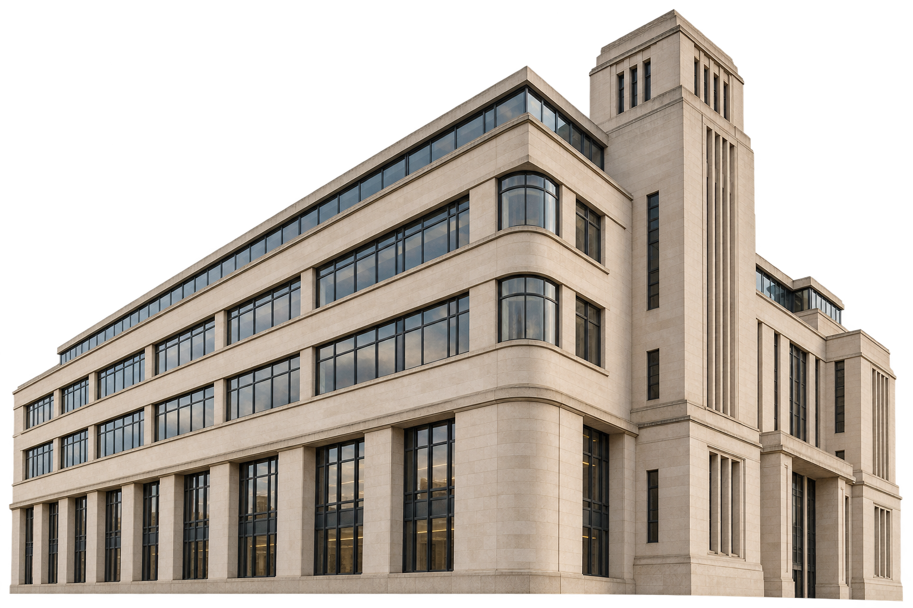

Discover
With Customer Services under strain, I compared the reasons people phoned with the pages for those tasks. That gave the team a service problem to investigate.
See the evidence →Public service design · London

Illustrative civic architecture
Making council services easier to find, understand and use, from the resident’s first question to the work happening behind the scenes.
Council services, seen from the outside in
At Richmond, resident research and service mapping helped shift the focus from departmental publishing to the tasks people came to do. The work joined up content, access and the teams behind the service.
Read the Richmond case studyThe Double Diamond · Richmond Council
The first diamond tested why people were calling and changed the brief. The second shaped a service around resident tasks, then put the changes into use. Each phase below links to the work behind it.
A worked example · Discover to Define
To investigate the calls, I compared the main reasons people contacted Customer Services with the pages meant to help them online. The same services appeared in both places. Putting them side by side made the connection visible to people who could change the brief.
The decision: make a case for fixing those journeys, then redesign around the tasks residents came to do.
| People called about | The page they needed |
|---|---|
| Bin collection days | Collection lookup |
| Council tax queries | Council tax account |
| Parking permits and fines | Parking services |
How to read this: a repeated match points to a journey worth investigating. This table reconstructs the comparison described in the case study; original figures have not been retained.
With Customer Services under strain, I compared the reasons people phoned with the pages for those tasks. That gave the team a service problem to investigate.
See the evidence →To put a decision in front of budget holders, I used a short cost case showing how avoidable contact consumed staff time and money.
See the decision →To show departments a clearer route for residents, I organised the site around tasks and made that change visible in its structure.
See the design →To help teams keep the approach consistent, I handed over shared responsive patterns. Customer Services reported fewer bin lookup calls.
See the outcome →Framework: Design Council’s Double Diamond. The project detail comes from the Richmond case study.